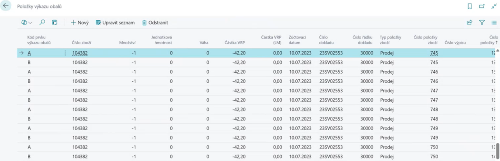

Viditelné recyklační příspěvky (VRP)
Aktualizace: 01.06.2025
Viditelné recyklační příspěvky (VRP) umožňují firmám jednoduše a přehledně evidovat poplatky spojené s recyklací obalů přímo v systému Business Central. Díky propojení s modulem Evidence obalů (EKOKOM) je možné VRP automaticky vypočítat a zahrnout do prodejních dokladů.
Jak VRP funguje?
- Automatické výpočty při vystavení dokladu – při vystavení prodejního dokladu systém automaticky přidá řádek s VRP příspěvkem na základě hmotnosti nebo kusů prodaného zboží.
- Podpora více měn a zákazníků – VRP lze nastavit jak pro české, tak pro zahraniční zákazníky, například s různými sazbami v CZK a EUR.
- Snadná integrace – VRP je integrováno přímo v systému Dynamics 365 Business Central, bez nutnosti dalších modulů.
- Plná kontrola nad přehledy – VRP poplatky jsou evidovány jako samostatné řádky na prodejních dokladech, což zajišťuje přehlednost a transparentnost vůči zákazníkům.

Klíčové přínosy
- Automatický výpočet VRP na základě hmotnosti, kusů nebo ceny produktu
- Možnost přizpůsobení podle zákazníka, země a měny
- Přehledné řádky VRP přímo na faktuře – zákazník vidí přesnou výši příspěvku
- Úspora času a eliminace chyb při manuálním počítání poplatků
- Plná kompatibilita s legislativou a principy environmentální odpovědnosti

Typické scénáře využití
- Prodej obalů s VRP příspěvkem – systém automaticky dopočítá poplatek na základě hmotnosti obalu a přidá ho do dokladu.
- Zákazníci v různých měnách – příspěvky lze nastavit jak v CZK, tak EUR (např. pro české a zahraniční zákazníky).
- Individuální sazby pro různé produkty – například jiný příspěvek za plastové lahve a jiný za palety.